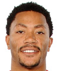
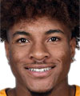

Estatura: 1,88
Peso: 91kg
Edad: 33 años
Años en la NBA: 12 años
Procedente de: Memphis
Estatura: 1,91
Peso: 85kg
Edad: 22 años
Años en la NBA: 1 año
Procedente de: Kentucky
Estatura: 1,91
Peso: 88kg
Edad: 28 años
Años en la NBA: 4 años
Procedente de: Villanova

Estatura: 1,88
Peso: 91kg
Edad: 21 años
Años en la NBA: Novato
Procedente de: West Virginia
Estatura: 1,83
Peso: 83kg
Edad: 31 años
Años en la NBA: 10 años
Procedente de: Uconn